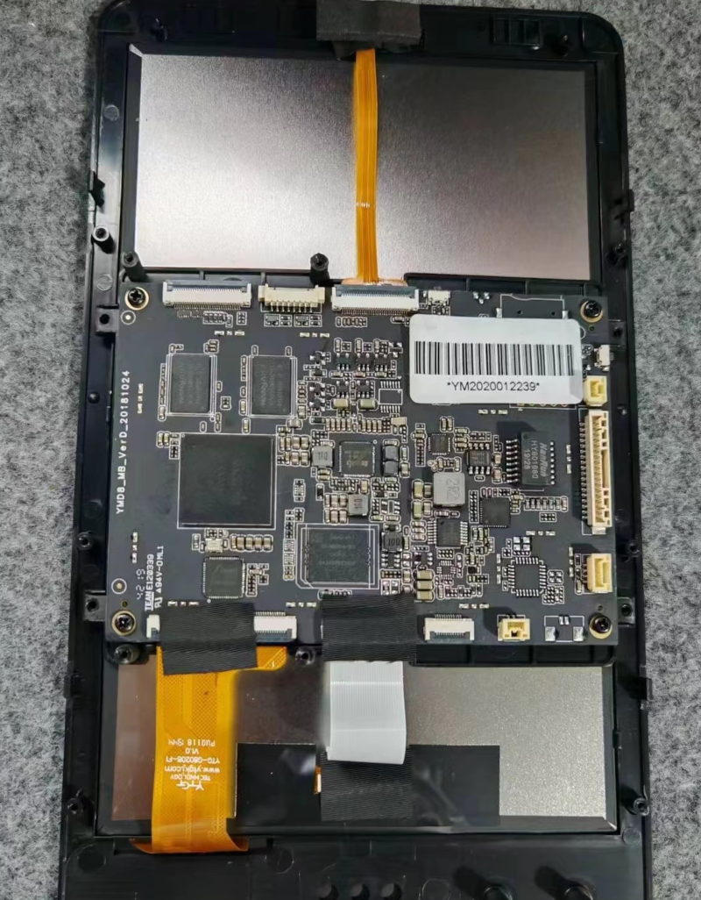
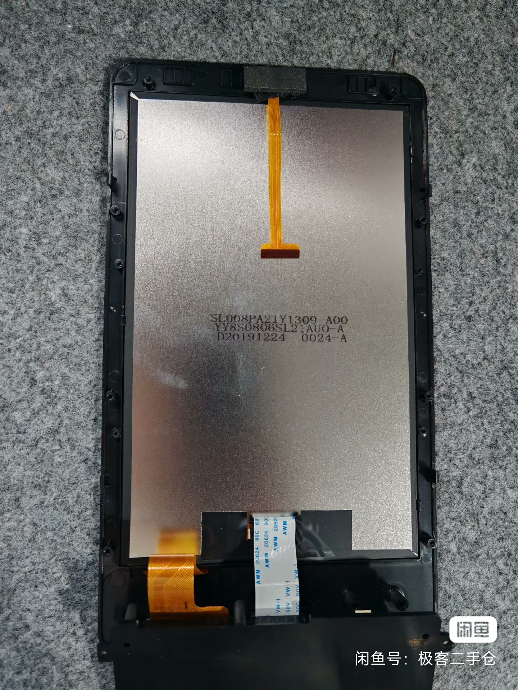
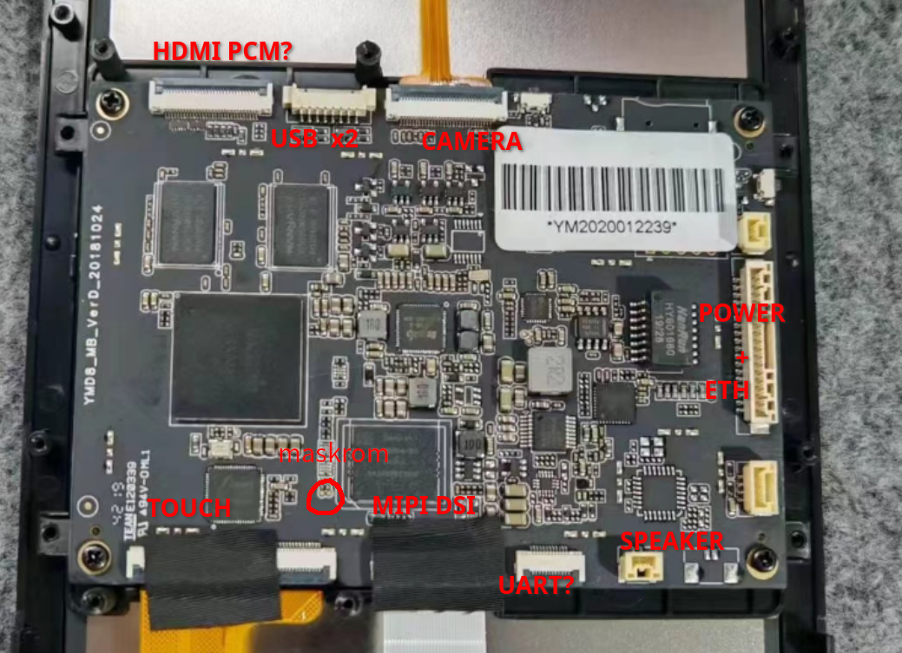
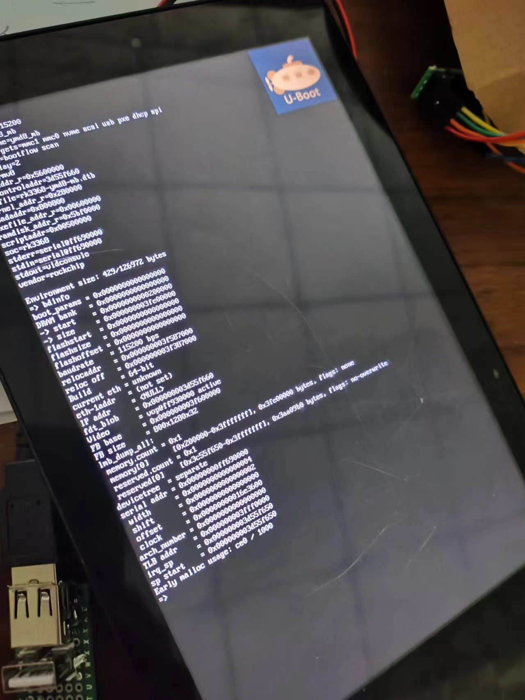

二手安卓终端分析定制¶
简介¶
从咸鱼平台购得一台安卓终端设备，从买家提供的信息可以确定设备的主控为RK3368,剩余信息未知，需要对设备的详细接口信息进行分析。
基础信息分析¶
板卡外观如下

面板型号如下

供电及各端口连接关系分析¶
根据电源RK808的走线，逐级向上测量供电来源，最终确认了供电端口以及供电电压。
已经连接设备的端口很容易确认相应的功能，悬空的端口根据布局、外围元器件以及PCB走线方向也基本可以确定其连接关系，目前可以确认的接口如下。

详细的IO顺序(可能有错误)见这里中的PFC元件部分。
系统信息获取及备份¶
Rockchip平台的调试串口一般情况下使用的是UART2,这组串口的默认复用通常在TF卡的D0与D1引脚，这个安卓终端有TF卡槽位置，但是并未焊接，使用USB转串口连接探针直接连接到D0/D1脚可以观察到有日志输出，随后补焊TF卡槽及相应的0欧电阻后便可以使用0.8mm厚度的TF PCB转接板进行连接了。
系统启动后串口终端可以直接使用su命令切换到root用户，随后使用U盘或者网络对原机系统进行整体备份(使用dd命令或者相应的网络拷贝命令)，并单独导出boot分区以便导出设备树进行分析。
一般情况下，消费市场的Rockchip平台安卓终端普遍使用的是厂商提供的SDK,因此uboot等镜像均为rk格式的镜像。
导出的boot分区为标准的Android boot image，在Linux平台中可以使用abootimg工具来对boot.img进行解包，解包后的文件一般包括内核、initramfs以及second stage,这里的second stage文件是rk格式的资源文件，里面一般包含了bmp格式的logo图片以及dtb文件。
$ ls
boot.bin
$ abootimg -x boot.bin
writing boot image config in bootimg.cfg
extracting kernel in zImage
extracting ramdisk in initrd.img
extracting second stage image in stage2.img
$ ls
boot.bin bootimg.cfg initrd.img stage2.img zImage
$ /opt/rkbin/tools/resource_tool --unpack --image=stage2.img
Dump header:
partition version:0.0
header size:1
index tbl:
offset:1 entry size:1 entry num:3
Dump Index table:
entry(0):
path:rk-kernel.dtb
offset:4 size:100651
entry(1):
path:logo.bmp
offset:201 size:170326
entry(2):
path:logo_kernel.bmp
offset:534 size:19160
Unack stage2.img to out successed!
$ ls out
logo.bmp logo_kernel.bmp rk-kernel.dtb
经过以上步骤，便获取到了该终端设备的设备树，使用dtc命令反编译即可得到源文件，通过对源文件进行分析，进一步得到外设及IO的使用分布情况，原始dts文件在这里。
| 外设 | 模块 |
|---|---|
| I2C0 | RK808 |
| I2C1 | ES8316 |
| I2C2 | gslx680 |
| UART0 | bluetooth |
| EMMC | EMMC |
| SDMMC | TF Card |
| SDIO | WIFI |
| 功能 | IO |
|---|---|
| usb host drv gpio | gpio0, 0x04 |
| usb otg drv gpio | gpio0, 0x05 |
| power key | gpio0, 0x02 |
| lcd rst gpio | gpio0, 0x13 |
| lcd backlight enable | gpio0, 0x19 |
| lcd backlight bright | pwm1: pwm@ff680010 |
| eth reset gpio | gpio3, 0x0c |
| es8316 spk gpio | gpio0, 0x1c |
| es8316 i2c | gpio2, 0x15 |
| es8316 i2c | gpio2, 0x16 |
| gslx680 i2c | gpio3, 0x1f |
| gslx680 i2c | gpio0, 0x09 |
| gslx680 touch | gpio0, 0x0c |
| gslx680 reset | gpio0, 0x0b |
| WIFI,poweren_gpio | gpio3, 4 |
| WIFI,host_wake_irq | gpio3, 6 |
| BT,power_gpio | gpio3, 3 |
| BT,reset_gpio | gpio3, 5 |
| BT,wake_gpio | gpio3, 2 |
| BT,wake_host_irq | gpio3, 7 |
| BT,uart rts gpio | gpio2, 0x1b |
主线U-Boot支持¶
U-Boot主线代码已经提供了RK3368的基础支持，理论上是可以直接使用的，但是主线代码只提供了基础外设的驱动支持，并且驱动中存在许多的错误，此外除RK3399这类使用范围广、用户量大的平台外，基本不包含屏幕显示等相关外设的驱动支持「即便如此，在查看了相关驱动代码后，主线U-Boot能否不做改动直接在RK3399平台上点亮屏幕也依然存疑」。
SPL¶
主线U-Boot的代码来看起来是支持RK3368的TPL和SPL的，但是我实际测试发现使用rkdeveloptool rd命令进行热复位时板卡可以正常启动到U-Boot命令行，而直接冷启动则会在TF-A跳转U-Boot这一步骤卡死，并且没有抛出任何异常，难以分析和定位，于是转而使用Rockchip提供的闭源miniloader来进行启动。
基础启动¶
主线代码的clk和emmc支持中存在一些功能缺失和错误，需要使能U-Boot的调试输出，逐一定位启动过程中的报错信息，对照下游内核或者U-Boot的源码分析排除。
VOP支持¶
适配主线U-Boot最大的挑战来自于显示部分，Rockchip提供的数据手册并没有这部分外设及硬件架构的详细描述，因此只能从其开源的内核代码、Uboot代码以及主线代码并结合同系列其他SOC的实现来推测其结构以及驱动方法。
通过查阅上述源码中的设备树源文件以及驱动代码，推测RK3368中显示部分的整体结构如下：SOC提供一个VOP单元，其规格为VOPB；VOP对外连接到MIPI-DSI、LVDS、RGB、HDMI以及eDP,提供显示接口；根据设备树以及驱动猜测，MIPI-DSI、LVDS以及RGB三者共用一个combo phy,这个phy ip来自于inno,这应该也意味着这三种接口的使用是互斥的。
VOP部分的驱动修改参考了这个仓库，我自己的修改思路和这个仓库中使用的方法基本相同，所以基于此仓库进行了略微改动，由于U-Boot不像内核一样提供simple-panel驱动，所以这里参考了现有驱动添加了一个panel驱动，panel驱动所需的屏幕初始化序列可以从上述提取出的dts获取。
经过上述修改，EMMC和屏幕便可以正常工作了，下一步便可以尝试使用主线内核进行启动了。

启动内核¶
为了优化启动时等待时间屏幕黑屏的体验，我们可以使用splash的方式在uboot阶段显示自定义logo，并通过simpledrm或者simplefb的方式由内核接管显示，实现平滑的显示切换。
但是实际测试发现内核驱动会在初始化过程中使能vop外设的iommu,这会造成iommu的page fault异常，而在drm驱动中添加页面的一比一映射又需要修改vop驱动代码，所以这里选择使能U-Boot的OF_BOARD_SETUP功能，在这一步将vop设置为standby模式便可以解决这个问题了，缺点便是直到内核重新初始化vop之后屏幕才会正常显示，中间会保持黑屏2s左右。
相关补丁见这个分支。
主线内核支持¶
主线内核和U-Boot一样，同样存在一些驱动缺失和错误的问题，好在我们同样可以参考下游仓库添加驱动支持或者修改相关错误。
内核相关补丁见这个分支，详细调试过程不再赘述，只记录难点问题。
触摸屏固件提取与调试¶
要使触摸屏可以正常工作，就必须加载触摸屏固件，因此提取原机触摸屏固件便成为让触摸屏正常工作不可或缺的一步。
这个二手终端使用的触摸IC是gsl3680,并且编译选项可以确认是y，从网上检索到的驱动来看，它的固件格式较为清晰，比较容易提取。
gslx680系列的固件格式如下，
struct fw_data
{
u32 offset : 8;
u32 : 0;
u32 val;
};
static struct fw_data GSLX680_FW[] = {
{0xf0,0x2},
{0x00,0x00000000},
{0x04,0x00000000},
可以看到，固件由固定序列0xf0+page address开始，根据单个机构体成员长度以及自然对齐原则可以知道固件文件在内核中的起始地址大概率是8字节对齐的，然后使用hexdump在一开始提取到的内核镜像中检索f0 00 00 00 02 00，可以很容易定位到固件所在地址，随后利用dd工具，指定相应的skip和count参数便可以将原机固件提取出来了，原机固件可以从这里下载。
固件提取之后便可以在设备树中添加相应的节点，并将固件拷贝到系统/lib/firmware/islead目录下，可以使用驱动默认的文件名，也可以使用自定义名称并在设备树中添加相应的属性即可。
注意一定要明确指定i2c总线的时钟频率为400kHz,否则可能会出现初始化失败等奇怪的问题。
安卓¶
在前期的检索过程中发现Rockchip有提供RK3368的Android 10 SDK,从FriendlyELEC提供的RK3399的安卓SDK里面的SDK描述中可以确认这一点，尝试使用这个SDK启动我们的板卡。
SDK整体没有太大问题，但是尝试过程中发现几个容易踩坑的点：
- SDK中的boot devices设备名是ff0f0000.dwmmc,但是设备树中的节点名称是mmc,不修改的话会导致ueventd卡住，无法正常创建设备节点
- 显示在uboot和启动动画阶段都正常，但是启动到锁屏界面后出现巨大偏移，上下鬼畜的现象，最终通过增大rockchip,lane-rate的方式解决
- 使用这个SDK自带内核的触摸屏驱动的话需要从原机固件中提取firmware和config id,firmware之前已经提取到了，这里需要再提取一下config id
基本上进行上述改动之后便可以正常启动系统了，目前网络还有些问题，还需要在安卓系统中使能有线网络连接相关的设置，相机目前也无法使用，应该还需要配置使能csi和isp相关的功能。
笔者目前就进行到这一步了，这里贴上调试启动的patch,格式比较乱，后续再更新。
0001-Now-we-can-boot-to-system-on-YMD8-MB-board.patch
结语¶
如果你有这款设备，也想尝试运行基础Linux或者安卓系统，欢迎通过邮件联系我讨论相关问题。